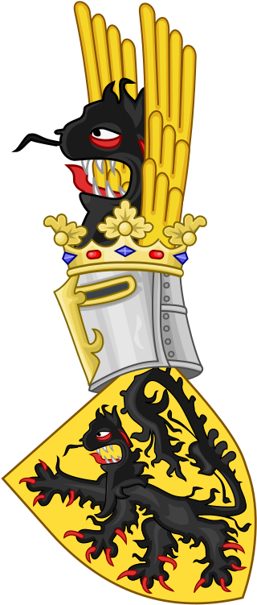
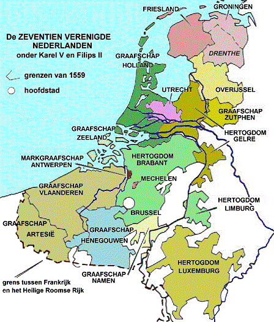
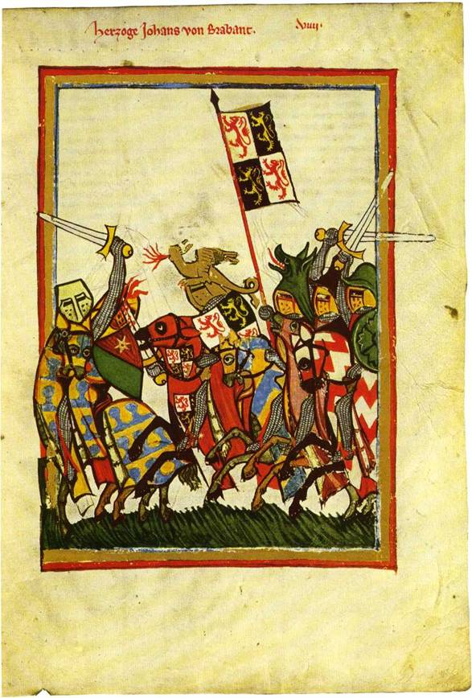

Deze site behandelt in de ruime zin de geschiedenis van onze gewesten van 800 tot 1800. Met onze gewesten worden de "lenen" bedoeld die ongeveer het huidige België vormen.
Al deze hertogdommen, markgraafschappen en graafschappen ontstonden na het uiteenvallen van het rijk van Karel I de Grote in de 9de eeuw, en het duurde eeuwen van oorlogen en slimme huwelijkspolitiek om weer enige vorm van eenheid in het bestuur ervan te brengen. In de 16de eeuw resulteerde dit in de "Nederlanden" als politieke entiteit onder Karel V, en nadien in de "Zuidelijke 10 Provinciën" onder Filips II.
Naast de klassieke "Geschiedenis" van namen en data, vindt u op deze site ook heel wat over "Heraldiek" uit deze periode en regio, alsook over historische "Kaarten" en "Antwerpen", mijn stad.
Het is enorm fascinerend hoe al deze domeinen aan elkaar gelinkt zijn en samen een totaalbeeld geven van deze periode in onze geschiedenis.
  
"Het beste dat de geschiedenis ons nalaat, is het enthousiasme dat zij veroorzaakt."
(Das Beste, was wir von der Geschichte haben, ist der Enthusiasmus, den sie erregt.
Goethe, Maximen und Reflexionen, 1840)
"Geschiedenis gaat bijna altijd over slechte mensen, waarover men later niets dan goeds vertelt."
(Die Geschichte handelt fast nur von diesen schlechten Menschen, welche spater gutgesprochen worden sind.
Friedrich Nietzsche)
"Lees geen geschiedenis, alleen levensbeschrijvingen, want dat is leven zonder theorie."
(Read no history, nothing but biography, for that is life without theory.
B.Disraeli, Contarini Fleming, 1832)
"Er is geen logica in de geschiedenis."
(Il n'y a pas de logique de l'histoire.
P.Gascar, L'Arche , 1971)


webmaster: Johan Andriessen
Wilrijk Belgium
©2021